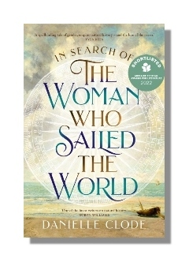

In Search of the Woman who Sailed the World
Shortlisted for the SA Literary Awards
'I feel the need to strip away the assumptions that clothe the historical figure of Jeanne Barret, to see the flesh and bone beneath, the beating heart and thinking brain of the person who lived and breathed but left no words for us to hear. Who was this woman?'
When the first woman to circumnavigate the world completed her journey in 1776, she returned home without any fanfare at all.
Jeanne Barret, an impoverished peasant from Burgundy, disguised herself as a man and sailed on the 1766 Bougainville voyage as the naturalist’s assistant. For over two centuries, the story of who this young woman was, why she left her home to undertake such a perilous journey and what happened when she returned has been shrouded in uncertainty.
Biologist and award-winning author Danielle Clode embarks on a journey to solve the mysteries surrounding Jeanne Barret. The result is an ode to the sea, to science and to one remarkable woman who, like all explorers, charted her own course for others to follow.
Published by Picador Australia (PanMacmillan)
Available in paperback and ebook
Available in all good bookstores
Find your local bookstore Buy now in Aus/NZ
Praise for the book
‘At the end of Clode's book, I emerged from a deep and absorbing dive, blinking saltwater and sunshine.' —Jessica White, Sydney Review of Books
‘Biologist, historian, writer, Clode once again demonstrates the connectedness of everything – animals, land, people, plants, sea, sky – at a time when, more than ever, we should be acutely aware of it.’ —Gay Lynch, Transnational Literature
‘this terrific book is an exploration of worlds we should never have lost' —Linda Jaivin, The Saturday Paper
‘immensely readable...probably the best and most interesting non-fiction book I have read this year.’ —Jeff Popple, Canberra Weekly
‘expertly plotted, threaded with the thrill and suspense of the archival chase.’ —Gemma Betros, Australian Book Review
‘Seamlessly weaving together memoir, history and science...a fascinating and deeply affecting exploration of voyaging, women's lives, and the stories we tell and the stories we don't.’ —James Bradley, author of Deep Water
‘Danielle Clode unties the knots of myth and weaves a fascinating story of discovery; Jeanne Barret is one of history’s most enigmatic explorers.’ —Nick Brodie, author of 1787
'A refreshingly open account that . . . brings a scientific rigour and a celebration of natural history to the biography of this important woman.' —Stephanie Parkyn, author of Into the World